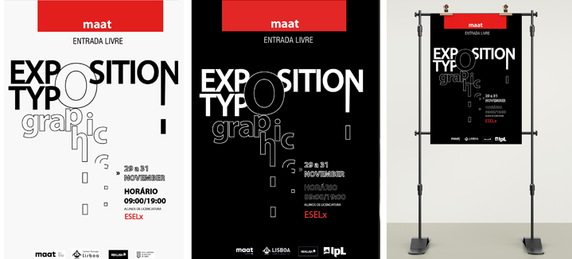

Cartaz Tipográfico
Este trabalho foi desenvolvido no âmbito da unidade curricular de Design Gráfico e tinha como principal objetivo explorar as capacidades dos alunos para a criação de um cartaz usando unicamente tipografia.
Neste sentido, comecei primeiramente por organizar os meus pensamentos, analisando todo um conjunto de cartazes que já existissem na internet. Depois de ter recolhido algumas inspirações acabei por fazer um pequeno briefing com as minhas ideias de cores, tipografia e organização do meu cartaz.
Acabei por apresentar duas propostas a professora sendo que o cartaz a preto ganhou um maior destaque depois de impresso.
Download cartaz AI
Download cartaz PDF
Download Mockups